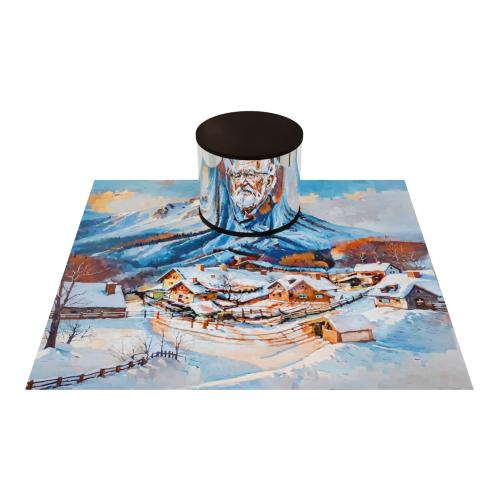
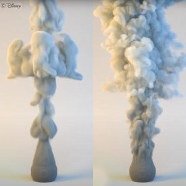
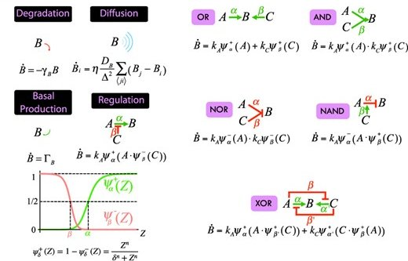

|
Sergio Sancho
I'm a joint PhD student at ETH Zurich and Disney Research, supervised by Markus Gross and Marios Papas. I earned my
Master's degree in 2023 from ETH Zurich, and my Bachelor's degree in 2020 from the University of
Valencia.
From a young age, I've been fascinated by the technical and creative aspects of filmmaking,
particularly in animation. My current research interests include computer graphics, physically-based
rendering and simulation, and the intersection of these fields with machine learning.
Email /
Scholar /
LinkedIn
|
|
|

|
LookingGlass: Generative Anamorphoses via Laplacian Pyramid Warping
Pascal Chang,
Sergio Sancho,
Jingwei Tang,
Markus Gross,
Vinicius
Azevedo,
CVPR, 2025 (Oral Presentation)
arXiv
We repurpose latent diffusion models to generate high-quality, complex, multi-view optical illusions such as anamorphoses.
|
|

|
The Impulse Particle-In-Cell Method
Sergio Sancho,
Jingwei Tang,
Christopher Batty,
Vinicius
Azevedo,
Eurographics, 2024 (Honorable Mention)
project /
paper /
video
We propose a hybrid fluid simulation method that uses the impulse formulation on particles to improve vorticity preservation.
|
|

|
ANISE: an application to design mechanobiology simulations of planar epithelia
Ángel Rodríguez Cerro,
Sergio Sancho,
Míriam Rodríguez,
Miguel A. Gamón,
Léna Guitou,
Rafael J. Martínez,
Javier Buceta,
Bioinformatics, Volume 38, Issue 17, September 2022
article
We develop a user-friendly application that simplifies the setup of mechanobiology simulations through a comprehensive graphical interface.
|
|
{kind=link}